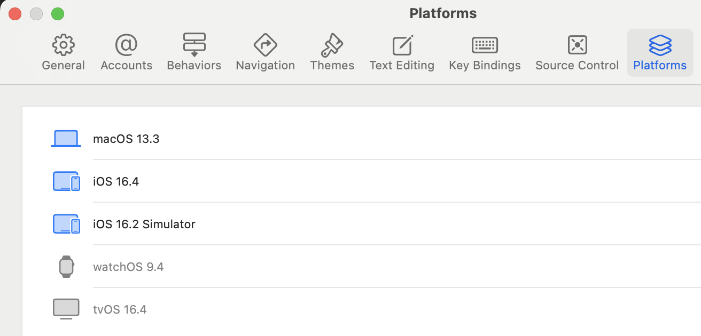

Nick Ma <skywalker.nick@gmail.com>
Date: 10/25/2023
A bridge between Go and anything else (which has C bindings)
It enables a Go program to call C functions.
It enables a C program to call "Go" functions.
It brings Gcc/Clang ecosystem and extends the cross-compilation capabilities.
package main
// #cgo CFLAGS: -g
// #include "stdlib.h"
// int add(int a, int b) {
// return a + b;
// }
import "C" // The virtual namespace containing C functions
import "fmt"
func main() {
C.srandom(C.uint(100))
a := C.int(C.random())
b := C.int(C.random())
fmt.Println("%v + %v = %v", a, b, C.add(a, b))
}
Start with a new .go source file
Embed the C codes you want to interface as comment prior to the import
Optional: #cgo preprocessor instructions to set C compiler and linker flags
Everything declared in C codes is available in the C namespace
| C data types | Cgo | Golang |
|---|---|---|
| int | C.int | int32 |
| double | C.double | float64 |
| uint64_t | C.uint64_t | uint64 |
| char | C.char | byte |
| unsigned char | C.uchar | uint8 |
// Go string to C string; result must be freed with C.free
func C.CString(string) *C.char
// C string to Go string
func C.GoString(*C.char) string
// C string, length to Go string
func C.GoStringN(*C.char, C.int) string
// C pointer, length to Go []byte
func C.GoBytes(unsafe.Pointer, C.int) []byte
//struct A {
// int i;
// float f;
//};
import "C"
import "fmt"
func main() {
// In order to access the C's "struct" from Go,
// Use "C.struct_" as the prefix.
var a C.struct_A
fmt.Println(a.i)
fmt.Println(a.f)
}
//typedef struct A {
// char name[32];
//} StructA
//#include "stdlib.h"
//#include "stringlh"
import "C"
func main() {
name := "abcd"
objA := C.StructA{}
cName := C.CString(name)
defer C.free(unsafe.Pointer(cName))
C.memcpy(unsafe.Pointer(&objA.name), unsafe.Pointer(cName),
C.size_t(len(name)))
}
Build a C interface wrapper for C++ class
Link the C++ library file and add "-lstdc++"
// my_buffer_capi.h
typedef struct MyBuffer_T MyBuffer_T;
MyBuffer_T* NewMyBuffer(int size);
void DeleteMyBuffer(MyBuffer_T* p);
char* MyBuffer_Data(MyBuffer_T* p);
int MyBuffer_Size(MyBuffer_T* p);
//static int add(int a, int b) {
// return a+b;
//}
import "C"
import "fmt"
func main() {
v := C.add(10, 5)
fmt.Println(v)
}
Given that you have a C library called "number"
package main
//#cgo CFLAGS: -I./
//#cgo LDFLAGS: -L./ -lnumber
//
//#include "number.h"
import "C"
import "fmt"
func main() {
fmt.Println(C.number_add(10, 5))
}
import "C"
//export number_add
func number_add(a, b C.int) C.int {
return a+b
}
The function's parameters and return values are C-friendly types
The return value must not directly or indirectly contain a pointer to the Go memory space.
Pre-build standard library
{Env} go install std
Build executable file
{Env} go build -buildvcs=false ./
Build shared library
{Env} go build -buildvcs=false -buildmode=c-shared ./
Build static library
{Env} go build -buildvcs=false -buildmode=c-archive ./
Ubuntu x86-64: Linux, Windows & Android
MacOS x86-64 or ARM64(M1/M2): MacOS, iOS & Simulator
Dependencies: golang-1.20, mingw-w64, llvm-8, gcc-6, openjdk-8, python3.6, android-ndk-22
Dependencies: golang-1.20, xcode-14

GOOS=linux GOARCH=amd64 CGO_ENABLED=1 go ...
CC=aarch64-linux-gnu-gcc-6 GOOS=linux GOARCH=arm64 CGO_ENABLED=1 go ...
CGO_CFLAGS="-D_WIN32_WINNT=0x0601" CC=x86_64-w64-mingw32-gcc-posix \
GOOS=windows GOARCH=amd64 CGO_ENABLED=1 go ...
CC=aarch64-linux-android22-clang \
GOOS=android GOARCH=arm64 CGO_ENABLED=1 \
go build -buildvcs=false -buildmode=c-shared \
--ldflags="-extldflags=-Wl,-soname,libXXX.so" ./
GOOS=darwin GOARCH=arm64 CGO_ENABLED=1 go ...
// If you build executable files on Apple M1/M2:
sudo xattr -r -d com.apple.quarantine ${executable-file}
codesign -s - ${executable-file}
### clangwrap.sh
#!/bin/sh
SDK_PATH=`xcrun --sdk $SDK --show-sdk-path`
CLANG=`xcrun --sdk $SDK --find clang`
if [ "$GOARCH" == "amd64" ]; then
CARCH="x86_64"
MINVER="-miphonesimulator-version-min=9.0"
elif [ "$GOARCH" == "arm64" ]; then
CARCH="arm64"
MINVER="-mios-version-min=7.0"
fi
exec $CLANG -arch $CARCH -isysroot $SDK_PATH $MINVER "$@"
GOOS=ios GOARCH=arm64 CGO_ENABLED=1 \
SDK=iphoneos CC=$(PWD)/clangwrap.sh \
go build -buildmode=c-archive -trimpath -tags ios ./
### produce TOC file: "__.SYMDEF"
/usr/bin/libtool -static -a ${lib-file} -o ${lib-file}
GOOS=ios GOARCH=amd64 CGO_ENABLED=1 \
SDK=iphonesimulator CC=$(PWD)/clangwrap.sh \
go build -buildmode=c-archive -trimpath -tags ios ./
xcodebuild -create-xcframework \
-library ... \
-headers ... \
-output libXXX.xcframework
There is no Go equivalent of a library you need and can’t re-write in Go.
You have legacy business logic in C which is hard to replace.
You need to build it as a proprietary library or SDK.
You need to integrate it with mobile platforms.
Slow Build Time
Manual-ish Memory Management
Debugging & Profiling
Concurrency, GC & Performance
Cgo is an FFI of Golang and is the bridge to the C world.
Cgo is an example of 1% of the effort giving 90% of the benefit.